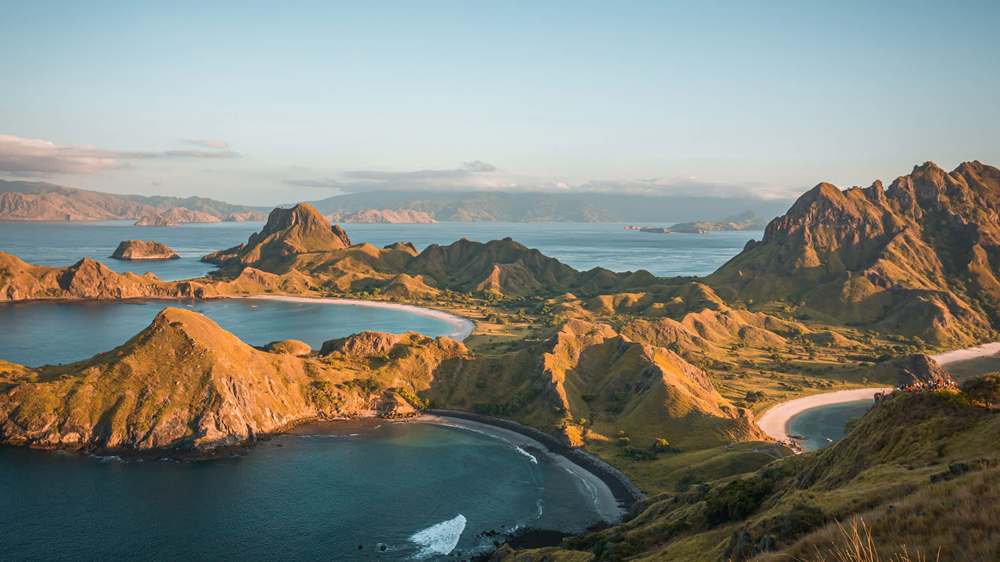
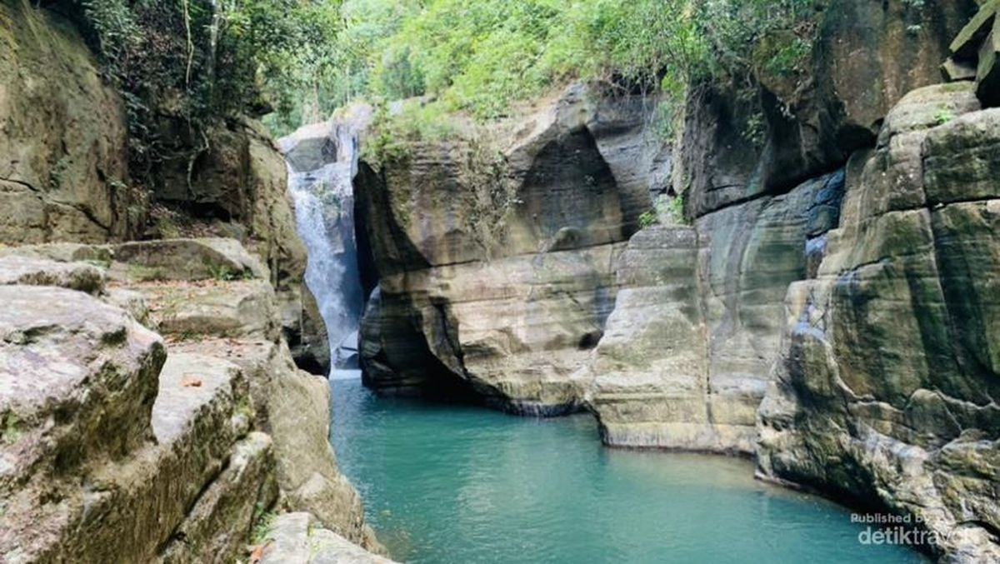
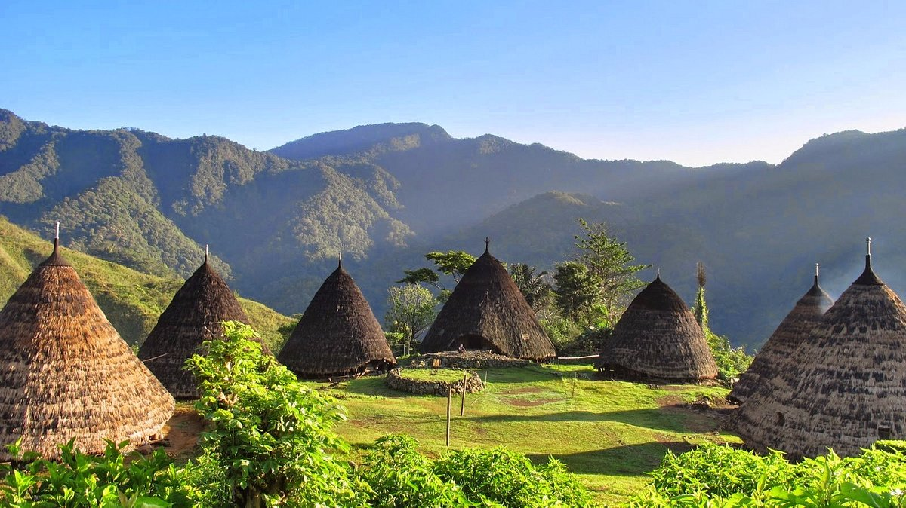
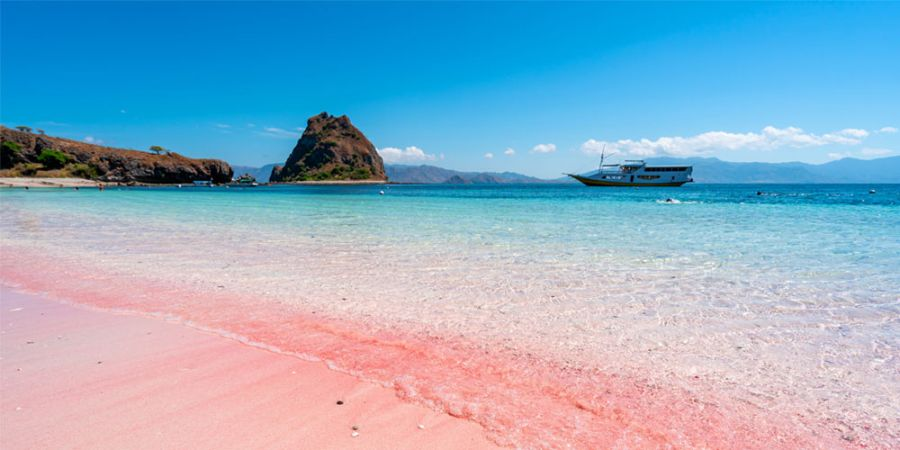

Tentang Labuan Bajo
Labuan Bajo adalah kota pelabuhan kecil di ujung barat Pulau Flores, Nusa Tenggara Timur. Kota ini menjadi pintu masuk utama menuju Taman Nasional Komodo dan gugusan pulau-pulau kecil di sekitarnya. Selain wisata laut, Labuan Bajo juga dikelilingi bukit sabana, air terjun, dan desa adat yang masih menjaga tradisi leluhur.
Wisata di Labuan Bajo

Cunca Wulang
Air terjun tersembunyi di tengah tebing batu, cocok untuk trekking ringan dan berenang.
Taman Nasional Komodo
Situs Warisan Dunia UNESCO, habitat asli komodo, kadal purba terbesar di dunia.

Desa Waerebo
Desa adat Manggarai dengan tujuh rumah kerucut Mbaru Niang di ketinggian 1.200 mdpl.

Pink Beach
Salah satu dari tujuh pantai berpasir merah muda di dunia, cocok untuk snorkeling.
Galeri Foto
Video
Contact
Ada pertanyaan seputar Labuan Bajo? Kirim email ke:
infolabuanbajo@trip.com